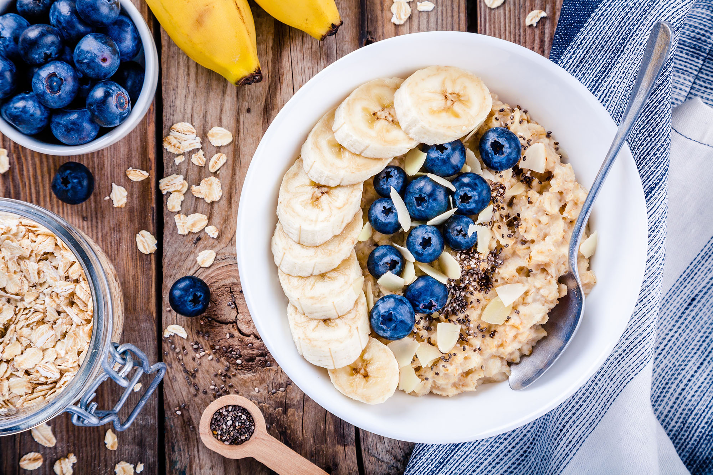

Back to Recipes
Power Porridge

Description
Wake up in the morning to this fresh, fruity and protein packed porridge!
These overnight oats are very quick and easy to grab on the go when your in a rush to head out the door.
Perfect for a pre-workout with all the protein you'll need in the morning.
Ingredients (serves 1)
- 100g Steel Cut Oats
- 1 Handful of Blueberries
- 1 Banana
- 1 tbsp Chia Seeds
- 1 scoop Protein Powder
- 1 cup Almond Milk
- 1 tbsp Honey

Method
- Pour the oats into a jar or container.
- Add the protein powder and chia seeds and mix with a fork.
- Throw in the blueberries.
- Mix in the Almond milk and drizzle honey on top.
- Seal container and place in fridge. Leave overnight ready for the morning.
- Slice up banana and place on top.
Conclusion
Coming in at over 30g of protein this is sure to keep those muscles growing! Enjoy with a cup of coffee to start the day
Back to Recipes
Carls Famous Turkey Chilli
Roast Chicken, Roast Veg